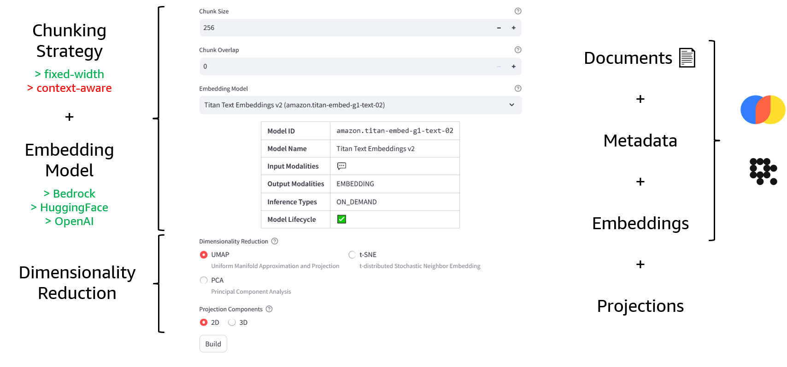

Mapping Embeddings üó∫Ô∏èüîç
From meaning to vectors and back
$$\left|\text{ü߆}\right>$$
Contents üìì
- Introduction to Embeddings
- Working with Vector Databases
- Dimensionality Reduction
- Advanced Retrieval Strategies
- Retrieval Augmented Generation (RAG)
Warning ⚠️
This deck is a work in progress…
and always will be
Feel free to search around üîé
Cite this presentation üìë
@misc{a-tour-of-genai-jgalego,
title = {Mapping Embeddings: from meaning to vectors and back},
author = {Galego, João},
howpublished = \url{jgalego.github.io/MappingEmbeddings},
year = {2024}
}Note on implementation ü뮂Äçüíª
The slides were created using reveal.js
and the presentation is hosted on GitHub Pages
Want to contribute? ✨
Just open an issue/PR for this project
github.com/JGalego/MappingEmbeddings
Introduction to Embeddings
Let's start by sending some love
to Amazon Titan for Embeddings...
Titan Love üî±üíó
"""
Sends love to Amazon Titan for Embeddings üíñ
and gets a bunch of numbers in return üî¢
"""
import json
import boto3
# Initialize Bedrock Runtime client
# https://boto3.amazonaws.com/v1/documentation/api/latest/reference/services/bedrock-runtime.html
bedrock = boto3.client("bedrock-runtime")
# Call Amazon Titan for Embeddings model on "love"
# https://docs.aws.amazon.com/bedrock/latest/userguide/titan-embedding-models.html
response = bedrock.invoke_model(
modelId="amazon.titan-embed-text-v1",
body="{\"inputText\": \"love\"}"
)
# Process the model response and print the final result
body = json.loads(response.get('body').read())
print(body['embedding'])
WTF?
Where is the love?

Let's put this question on hold for now...
and work out some definitions.
What are embeddings?
A numerical representation of a piece of information
data $\rightarrow$ "meaningful" numbers
Example: Embedding Wikipedia
What if you had the embeddings of ALL Wikipedia?

Example: Amazon Music
Neighboring vectors, similar tracks

Example: Embedding Projector

Let's get back to our original example...
Why love?

Rule of thumb: 1 token ~ 4 characters
You may have heard of the
$\texttt{1 token} \sim \texttt{4 chars}$ rule of thumb
Well, things are a bit more complicated than that...
so let's spend a few tokens on tokenization
Tokenization is the root of (almost) all evils
Some are just plain ùö†ùî¢ùíæùê´ùî°...
Tokenization is one of the reasons why LLMs
are usually bad at math...
Tiktokenizing integers
Replicating Integer Tokenization is Insane ü§Ø
All languages are not created tokenized equal!

Ok, time to head back to our main feature...

How do we actually train an embedding model?
Step 1: Model
pip install -q sentence-transformersThere are plenty to choose from on ü§ó
Step 2: Data + Loss Function

Step 3: Test
MTEB: Massive Text Embedding Benchmark
How good/bad is Amazon Titan for Embeddings?
* Inspired by Phil Schmid's postOctober 2023: amazon.titan-embed-text-v1
September 2024: amazon.titan-embed-text-v2:0
Working with Vector Databases
Quote #1
"The most important piece of the preprocessing pipeline, from a systems standpoint, is the vector database."Andreessen Horowitz
Quote #2
"In the future, we believe that every database will be a vector database."Google
Vector databases are everywhere
But... what are they?
Any database that treats vectors as first class citizens is a vector database.

CR7 Embeddings ⚽
Vector Database Types
Vector Databases on AWS
Demo: SQLite + Amazon Bedrock
Multimodal vector search with sqlite-rembed

Mind the (multimodal) gap!
Modality Gap Explorer üß≠
Dimensionality Reduction Techniques
Dimensionality reduction is used to
make sense of high-dimensional data

It can bring huge benefits...
- Compute / Storage ⬇️
- Data Visualization ✨
It comes in many flavors...
- global üÜö local
- linear üÜö non-linear
- parametric üÜö non-parametric
- deterministic üÜö stochastic
We'll focus on 3 different techniques...
Toy Example

The map is not the territory!

Von Neumann's Elephant Woolly Mammoth
Now, you may be wondering...
How do models represent more features
than they have dimensions?
Let's talk about Superposition
(not the quantum type)Superposition Hypothesis
The Hunt for Monosemanticity
Example: Golden Gate Bridge üåâ

Example: Golden Gate Bridge üåâ
Example: Golden Gate Bridge üåâ
Example: Golden Gate Bridge üåâ

Advanced Retrieval Strategies
When (naive) vector search fails!

RAG Triad
Advanced Retrieval Techniques
- Query transformations
- Generated answers
$\texttt{query} \rightarrow \texttt{LLM} \rightarrow \texttt{hypothetical answer}$ - Multiple queries
$\texttt{query} \rightarrow \texttt{LLM} \rightarrow \texttt{sub-queries}$ - Cross-encoder re-ranking
- Embedding adaptors
- Other techniques
- Fine-tune embedding model
- Fine-tune LLM for retrieval (RA-DIT, InstructRetro)
- Deep embedding adaptors
- Deep relevance modelling
- Deep chunking
RAG Fusion
Demo: RAGmap üó∫Ô∏èüîç
RAGxplorer ü¶ôü¶∫
A simple tool for RAG visualizations
First major bug!
RAGmap üó∫Ô∏èüîç
Visualization tool for exploring embeddings
RAG in a nutshell ü•ú
- LLMs are trained on HUGE amounts of data, but...
- LLMs haven't seen your data
- RAG is key to connecting LLMs to external data
RAG Stages
- Load
- Index
- Store
- Query
- Evaluate
- Update
Let's look at an example...
Step 1: Load
Step 2: Index + Store
Step 3: Query
Step 4: Evaluate
References üìö

General
- (Modern Coding) Introduction to embeddings (vectors) and how they work
- (StackOverflow) An intuitive introduction to text embeddings
- (Hugging Face) Getting Started with Embeddings
- (Zilliz) An Introduction to Vector Embeddings: What They Are and How to Use Them
- (Weaviate) Step-by-Step Guide to Choosing the Best Embedding Model for Your Application